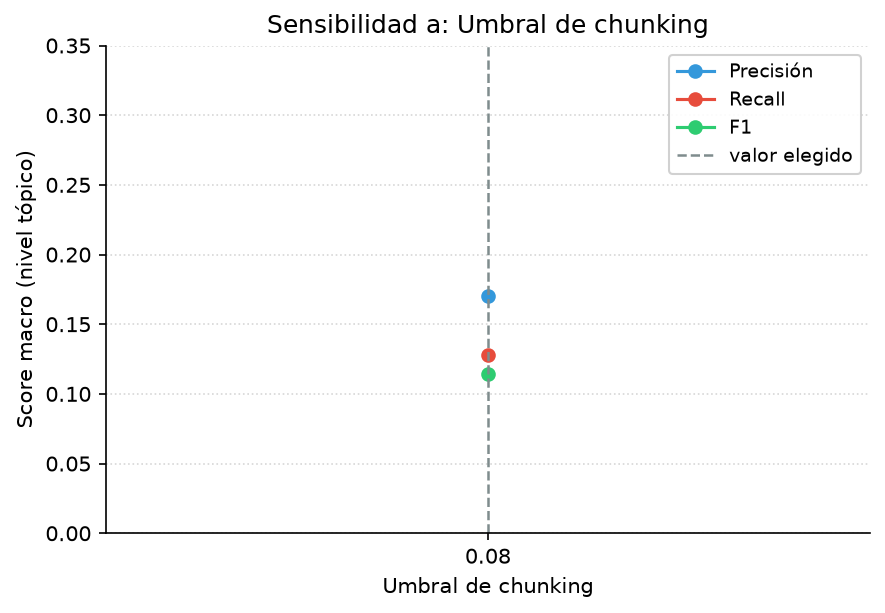
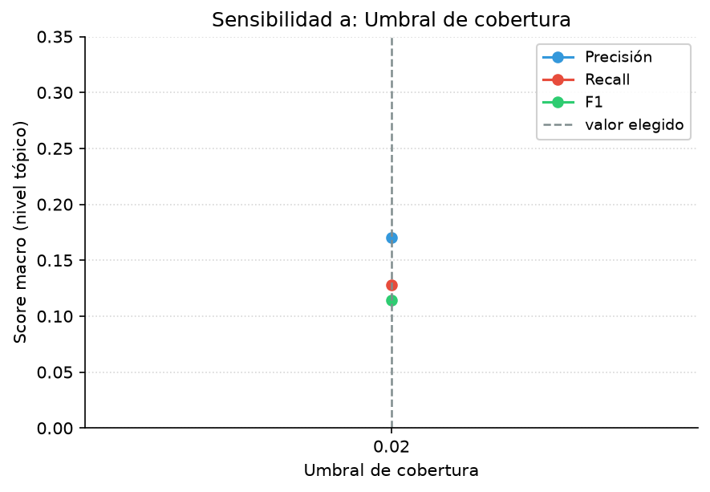
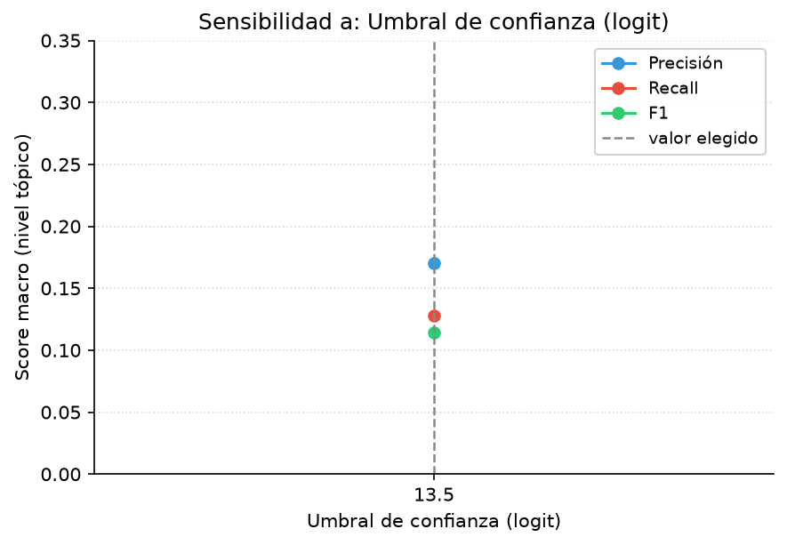
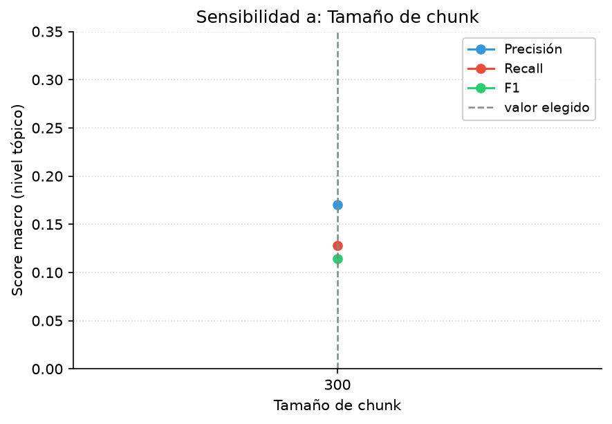
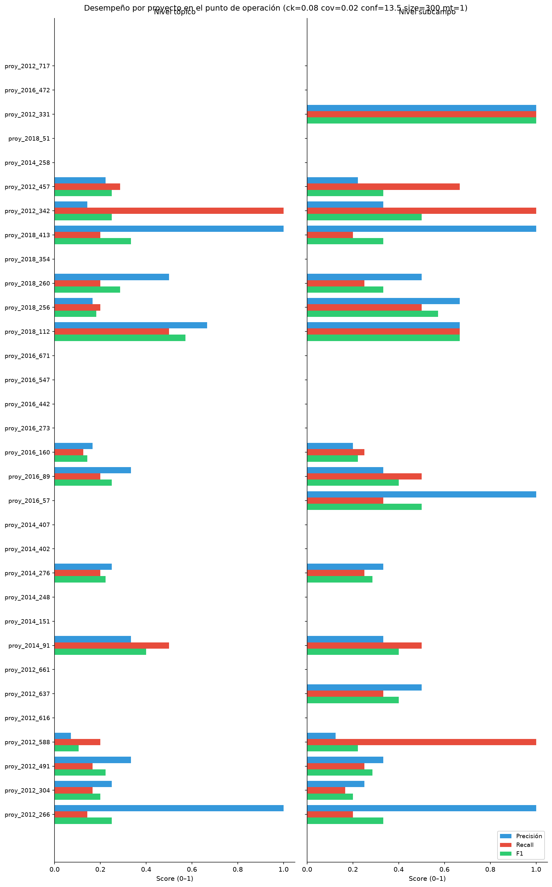

Variando: configuración única · 1 combinación(es) · GT: ground_truth_kg_evaluation.json · generado 2026-07-10 13:50 UTC
| Config | Parámetros | Proy. | Macro | Micro | Conteo (micro) | ||||||||||
|---|---|---|---|---|---|---|---|---|---|---|---|---|---|---|---|
| chunk_thr | cov | conf | size | mt | P | R | F1 | P | R | F1 | TP | FP | FN | ||
| ck=0.08 cov=0.02 conf=13.5 size=300 mt=1 | 0.08 | 0.02 | 13.5 | 300 | 1 | 32 | 0.170 | 0.128 | 0.115 | 0.180 | 0.121 | 0.145 | 16 | 73 | 116 |
| Proyecto | ck=0.08 cov=0.02 conf=13.5 size=300 mt=1 |
|---|---|
| proy_2012_266 | 0.250 |
| proy_2012_304 | 0.200 |
| proy_2012_331 | 0.000 |
| proy_2012_342 | 0.250 |
| proy_2012_457 | 0.250 |
| proy_2012_491 | 0.222 |
| proy_2012_588 | 0.105 |
| proy_2012_616 | 0.000 |
| proy_2012_637 | 0.000 |
| proy_2012_661 | 0.000 |
| proy_2012_717 | 0.000 |
| proy_2014_151 | 0.000 |
| proy_2014_248 | 0.000 |
| proy_2014_258 | 0.000 |
| proy_2014_276 | 0.222 |
| proy_2014_402 | 0.000 |
| proy_2014_407 | 0.000 |
| proy_2014_91 | 0.400 |
| proy_2016_160 | 0.143 |
| proy_2016_273 | 0.000 |
| proy_2016_442 | 0.000 |
| proy_2016_472 | 0.000 |
| proy_2016_547 | 0.000 |
| proy_2016_57 | 0.000 |
| proy_2016_671 | 0.000 |
| proy_2016_89 | 0.250 |
| proy_2018_112 | 0.571 |
| proy_2018_256 | 0.182 |
| proy_2018_260 | 0.286 |
| proy_2018_354 | 0.000 |
| proy_2018_413 | 0.333 |
| proy_2018_51 | 0.000 |




